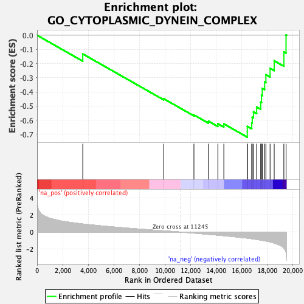
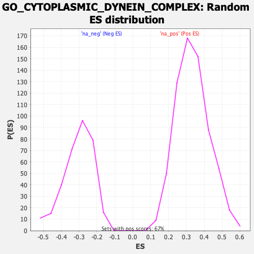

| | | Dataset | Recurrence |
| Phenotype | NoPhenotypeAvailable |
| Upregulated in class | na_neg |
| GeneSet | GO_CYTOPLASMIC_DYNEIN_COMPLEX |
| Enrichment Score (ES) | -0.72027725 |
| Normalized Enrichment Score (NES) | -2.3667746 |
| Nominal p-value | 0.0 |
| FDR q-value | 0.009163228 |
| FWER p-Value | 0.009 |
Table: GSEA Results Summary

Fig 1: Enrichment plot: GO_CYTOPLASMIC_DYNEIN_COMPLEX
Profile of the Running ES Score & Positions of GeneSet Members on the Rank Ordered List

Fig 2: GO_CYTOPLASMIC_DYNEIN_COMPLEX: Random ES distribution
Gene set null distribution of ES for GO_CYTOPLASMIC_DYNEIN_COMPLEX